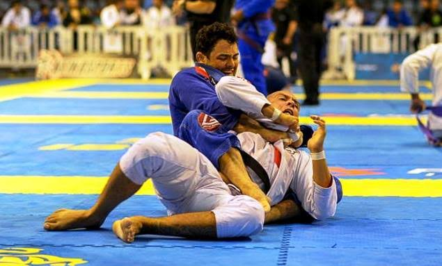

Emanoel rian da Silva Lima
Tenho 24 anos de idade e nasci no Estado da bahia em uma cidade chamada Paulo Afonso, até os meus 18 anos morei predominantemente na cidade de jatobá no Estado de Pernambuco, mas dentro desses 18 anos morei também em Juazeiro BA, Terezina PI e Feira de Santana durante um ano em cada uma delas, ao completar os 18 anos vim para Santa Cantarina e desde então resido aqui. sempre fui aquele tipo de garoto gordinho com poucos amigos, e hoje em dia isso não mudou muito. Ainda possuo um curto circulo de amigos. fui casado por aproximadamente 8 meses e devido alguns acontecimentos acabou vindo a divorcio.

Peculiaridades
Hobbies
Jiu-Jitsu
Engressei no mundo do Jiu-Jitsu próximo ao fim do ano, como forma de escapar de uma rotina ruim e de um possivel quadro de depressao.
Video-Games
Desde que me conheço por gente sempre joguei video-game, comecei com um PS1 la por volta dos meus 4 anos de idade, atualmente possuo um PS5 e um PC que eu mesmo montei.
Top 3 jogos que mais tenho jogado recentemente
 Counter-Strike
Counter-Strike theft auto VI
theft auto VI Efootball
Efootball
Um pouco mais sobre o jiu-jitsu para min
Em que a pratica do Jiu-Jitsu tem me ajudado?
- Pensar mais antes de agir
- Formar novas amizades.
- Ter mais auto-controle nas minhas ações
- Manter uma constancia
Finalização que mais gostei

finalização arco e flecha
Interesses
Sou uma pessoa nada diferente de um jovem na mesma faixa de idade, gosto de dirigir, fazer passeios, conhecer lugares e comidas novas, curto jogos e dentre outras diversas coisa. No momento meus focos são me aprimorar no jiu-jitsu cada vez mais e com isso também me desenvolver pessoalmente